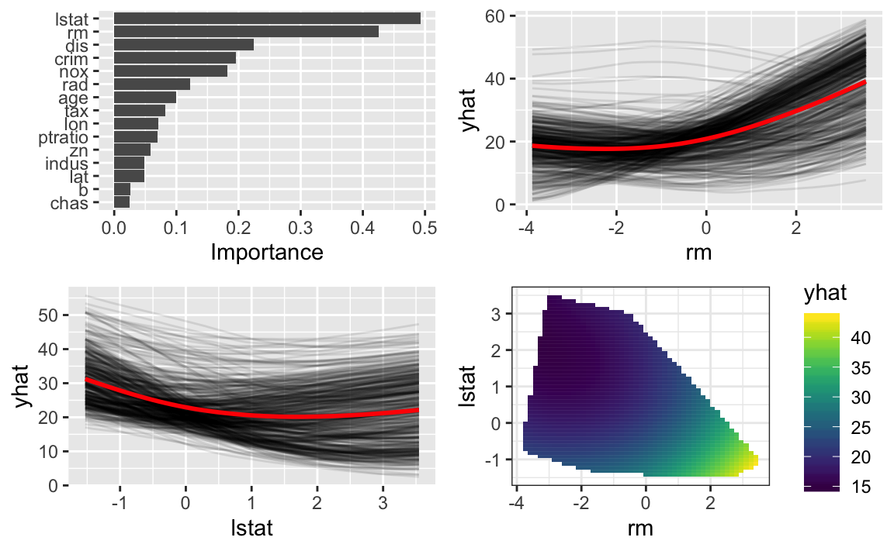

Extending vip
A TensorFlow example Using the Keras API
Brandon M. Greenwell and Bradley C. Boehmke
2019-07-08
Source:vignettes/vip-tensorflow.Rmd
vip-tensorflow.RmdIt is possible to use the vip package (Greenwell and Boehmke 2018) with any fitted model for which new predictions can be generated. This is possible via method = "ice", method = "pdp", and method = "permute" since these methods construct variable importance (VI) scores based solely off of a model’s predictions—albeit, in different ways. In this vignette, we will demonstrate the construction of permutation-based VI scores (i.e., method = "permute") using a TensorFlow model trained to the Boston housing data with the keras package (Allaire and Chollet 2018). This particular example is adapted from Chollet and Allaire (2018). We’ll supplement the the variable importance plot (VIP) with feature effect plots using the pdp package (Greenwell 2017)—a general R package for constructing partial dependence plots (PDPs) (Friedman 2001) and individual conditional expectation (ICE) curves (Goldstein et al. 2015).
Prerequisites
# Load required packages
library(dplyr) # for data wrangling
#> Warning: package 'dplyr' was built under R version 3.5.2
library(ggplot2) # for general visualization
#> Warning: package 'ggplot2' was built under R version 3.5.2
library(keras) # for fitting DNNs
#> Warning: package 'keras' was built under R version 3.5.2
library(pdp) # for partial depe
library(vip) # for visualizing feature importance
# For reproducibility
use_session_with_seed(101)Predicting median home value
To illustrate, we’ll fit a TensorFlow model to the Boston housing data (Harrison and Rubinfeld 1978). A corrected version of these data are available in the pdp package. In the code chunk below, we load a corrected version of the original Boston housing data (see ?pdp::boston for details) and separate the training features (train_x) from the training response values (train_y).
# Loading (corrected) Boston housing data
data(boston, package = "pdp")
# Construct matrix of training data (features only)
train_x <- boston %>%
select(-cmedv) %>% # remove response
mutate(chas = as.numeric(chas)) %>% # convert factor to numeric
as.matrix() # convert to numeric matrix
# Construct vector of training response values
train_y <- boston$cmedvSince the features are measured on very different scales (e.g., longitude and per capita crime rate by town), we center and scale the columns of train_x using the scale() function.
train_x <- scale(train_x, center = TRUE, scale = TRUE) # normalize data
apply(train_x, MARGIN = 2, FUN = function(x) c(mean(x), sd(x))) # sanity check
#> lon lat crim zn indus
#> [1,] -5.363227e-14 -2.272681e-14 -7.202981e-18 2.282481e-17 1.595296e-17
#> [2,] 1.000000e+00 1.000000e+00 1.000000e+00 1.000000e+00 1.000000e+00
#> chas nox rm age dis
#> [1,] -1.586632e-16 -2.150022e-16 -1.056462e-16 -1.643357e-16 1.153079e-16
#> [2,] 1.000000e+00 1.000000e+00 1.000000e+00 1.000000e+00 1.000000e+00
#> rad tax ptratio b lstat
#> [1,] 4.799652e-17 2.024415e-17 -3.924246e-16 -1.151679e-16 -7.052778e-17
#> [2,] 1.000000e+00 1.000000e+00 1.000000e+00 1.000000e+00 1.000000e+00Next, we define a function for fitting a Keras model composed of a linear stack of layers. Since the Boston housing data is rather small (\(n =\) 506), we’ll use a very small network with only two hidden layers, each with 64 units. Building small networks like this can help mitigate overfitting to smaller data sets.
build_model <- function() {
model <- keras_model_sequential() %>%
layer_dense(units = 64, activation = "relu",
input_shape = dim(train_x)[[2]]) %>%
layer_dense(units = 64, activation = "relu") %>%
layer_dense(units = 1)
model %>% compile(
optimizer = "rmsprop",
loss = "mse",
metrics = c("mae")
)
}Since we don’t have a lot of observations, we used \(k\)-fold cross-validation (CV) (with \(k = 4\)) to evaluate the network and choose the optimal number of epochs1 The performance of the network was evaluated using mean absolute error (MAE), which is the absolute value of the difference between the predicted and observed outcomes. In this example, the cross-validated MAE stopped improving after about 125 epochs. Using this result, we train a final network using 80 epochs2.
Model interpretation
Here we’ll look at two methods for model interpretation: variable importance and individual conditional expectation (ICE) curves. The methods are available in the R packages vip and pdp, respectively.
While both packages support a wide range of models, it is rather straightforward to use them for any model for which new predictions can be obtained. To start, we’ll have to define a prediction function wrapper which requires two arguments: object (the fitted model object) and newdata. The function needs to return a vector of predictions (one for each observation).
pred_wrapper <- function(object, newdata) {
predict(object, x = as.matrix(newdata)) %>%
as.vector()
}A simple measure of variable importance can be obtained using the permutation approach described in Breiman (2001) for random forests. In essence, we randomly permute the values of each feature and record the drop in training performance. This can be accomplished using the vip() function with method = "permute". To use this method we need to supply the original training response values via the obs argument and specify which performance metric we are interested in (in this case, we’ll use \(R^2\)). The results are, which are displayed in Figure 2, indicate that the average number of rooms per dwelling (rm) and the percentage of lower status of the population (lstat) are the most important features in predicting median home value.
set.seed(102) # for reproducibility
p1 <- vip(
object = model, # fitted model
method = "permute", # request permutation-based VI scores
num_features = ncol(train_x), # default only plots top 10 features
pred_wrapper = pred_wrapper, # user-defined prediction function
target = train_y, # name of the target variable column
metric = "rsquared", # evaluation metric
train = as.data.frame(train_x), # training data
# progress = "text" # request a text-based progress bar
)
print(p1) # display plotFigure 2 Permuation-based VIP for the fitted network.
Next, we’ll construct ICE curves for the top two features: rm and lstat. To do this we use pdp’s partial() function. By default, partial() constructs partial dependence plots (PDPs); The PDP for a feature of interest can be constructed by averaging together the ICE curves from each observation for that feature. To suppress this averaging and construct ICE curves, set ice = TRUE in the call to partial(). Since ICE curves require a prediction for each observations, we can use the same wrapper function we defined earlier. The ICE curves for both rm and lstat in Figure 3 display a bit of heterogeneity indicating the possible presence of interaction effects. The solid red curve in each plot represents the average of all of the ICE curves (i.e., the PDP for that feature).
p2 <- partial(model, pred.var = "rm", pred.fun = pred_wrapper,
train = as.data.frame(train_x)) %>%
autoplot(alpha = 0.1)
p3 <- partial(model, pred.var = "lstat", pred.fun = pred_wrapper,
train = as.data.frame(train_x)) %>%
autoplot(alpha = 0.1)
grid.arrange(p2, p3, ncol = 2) # display plots side by side
Figure 3 ICE curves (black lines) and PDPs (red lines) for the predictors rm (left) and lstat (right).
A couple of additional points are worth noting:
The default output from
partial()is a data frame. You can setplot = TRUEto obtain a plot instead, but since these plots can be expensive to compute, it is better to store the results and plot them manually using, for example,autoplot()(forggplot2-based plots) orplotPartial()(forlattice-based plots).Before fitting the network we normalized the data by centering and scaling each feature. In order for these plots to be on the original scale, you would need to unscale the corresponding column(s) in the output by multiplying by the original sample standard deviation and adding back the sample mean of that feature.
ICE curves and PDPs can be computationally expensive. Some strategies are discussed in Greenwell (2017). The
partial()function has many useful options to help, for example,progressandparallel(see?pdp::partialfor details). To obtain a PDP, we need to supply a prediction function that returns the average prediction across all observations. This can be easily accomplished by adding an extra line to the previously defined wrapper.
pdp_wrapper <- function(object, newdata) {
predict(object, x = as.matrix(newdata)) %>%
as.vector() %>%
mean() # aggregate ICE curves
}Next, we’ll construct the partial dependence of medium home value (cmedv) on the average number of rooms per dwelling (rm) and the percentage of lower status of the population (lstat). To restrict the predictions to the region of joint values of rm and lstat observed in the training data (i.e., to avoid extrapolating) we set chull = TRUE in the call to partial(); this also helps speed up computation time by restricting the grid over which predictions are obtained. The resulting plot displayed in Figure 4 indicates what we would naturally expect: that census tracts with a higher average number of rooms per dwelling and a lower percentage of lower status of the population tend to have a higher median value.
p4 <- partial(model, pred.var = c("rm", "lstat"), chull = TRUE,
pred.fun = pdp_wrapper, train = as.data.frame(train_x)) %>%
autoplot()
print(p4) # display plot
Figure 4 Partial dependence of cmedv on rm and lstat.
Finally, we can display all the results in a single plot.

References
Allaire, JJ, and François Chollet. 2018. Keras: R Interface to ’Keras’. https://CRAN.R-project.org/package=keras.
Breiman, Leo. 2001. “Random Forests.” Machine Learning 45 (1): 5–32. https://doi.org/10.1023/A:1010933404324.
Chollet, Francois, and J. J. Allaire. 2018. Deep Learning with R. 1st ed. Greenwich, CT, USA: Manning Publications Co.
Friedman, Jerome H. 2001. “Greedy Function Approximation: A Gradient Boosting Machine.” The Annals of Statistics 29 (5): 1189–1232. https://doi.org/10.1214/aos/1013203451.
Goldstein, Alex, Adam Kapelner, Justin Bleich, and Emil Pitkin. 2015. “Peeking Inside the Black Box: Visualizing Statistical Learning with Plots of Individual Conditional Expectation.” Journal of Computational and Graphical Statistics 24 (1): 44–65. https://doi.org/10.1080/10618600.2014.907095.
Greenwell, Brandon, and Brad Boehmke. 2018. Vip: Variable Importance Plots. https://CRAN.R-project.org/package=vip.
Greenwell, Brandon M. 2017. “Pdp: An R Package for Constructing Partial Dependence Plots.” The R Journal 9 (1): 421–36. https://journal.r-project.org/archive/2017/RJ-2017-016/index.html.
Harrison, David, and Daniel L. Rubinfeld. 1978. “Hedonic Housing Prices and the Demand for Clean Air.” Journal of Environmental Economics and Management 5 (1): 81–102. https://doi.org/10.1016/0095-0696(78)90006-2.